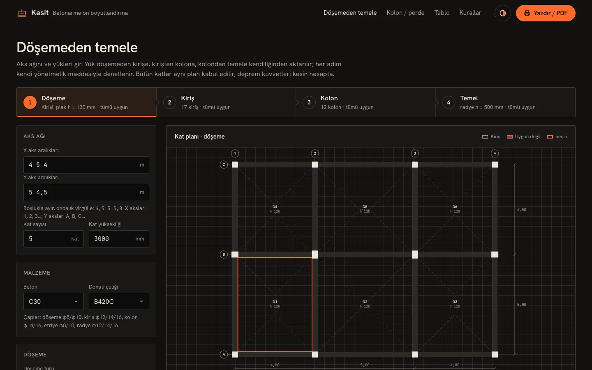

Döşemeden temele. Kesit boyutlasın.
Aks ağını ve yükleri girin; döşeme kalınlığı, kiriş, kolon ve radye temel boyutu donatısıyla bulunsun. Kirişli plak, dişli, kaset ve kirişsiz döşeme; sehim ve zımbalama dahil her koşul yönetmelik maddesiyle denetlensin.
1 Mart kararnamesiTBDY 2018TS 500TS 498
Örnek pafta · Kat planıcanlı hesap
Üç adımda ön boyut, sıfır tahmin.
- 01
Aks ağını girin
Aks aralıkları, kat sayısı ve yüksekliği, döşeme türü, kaplama ve hareketli yük, duvarlar, zemin taşıma gücü. Öz ağırlıkları araç kendisi hesaplar.
- 02
Zinciri izleyin
Önce döşeme kalınlığı, sonra kiriş, kolon ve radye boyutlanır; yük her adımdan bir sonrakine geçer. Donatı φ8–φ16 seçilir, sehim ve zımbalama denetlenir.
- 03
Raporu yazdırın
Kat planı, Excel tarzı sayfalar ve her koşulun yönetmelik maddesi A4 rapora tek tıkla dökülür.
